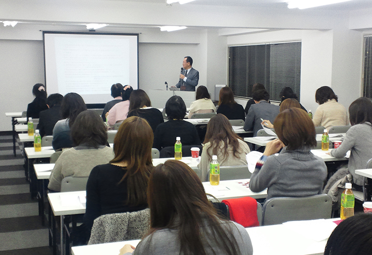

複数の調剤薬局を知る私から見ても、一番働きやすい環境です

つばさ薬局駒沢店
薬剤師伴内春菜さん
栃木県出身。千葉科学大学薬学部卒。調剤薬局企業3社を経て2015年8月に入社。現在、つばさ薬局で調剤、投薬、入力業務に関わっている。転職を機に駒沢店の近くに引っ越し、健康維持も兼ねて自転車で通勤している。
ローテーション制だから平等感があり、気持ちよく働けます
調剤薬局を数社経験されていますね。
どこもほとんど不満はなく、楽しくやりがいを持って働けていたので、薬局薬剤師は私の天職だと思っています(笑)。これまで在籍した企業では人手不足で管理薬剤師の目が店舗に行き届かず、現場の負担が増えたこともあり転職を決意しました。だから薬剤師の数が充足していて、休みも取りやすいというのが、当社を選んだ1つの理由です。でも一番は社長の人柄。初対面でも、ざっくばらんに本音を言いやすい気さくな人柄を通して、開放的な社風がうかがえました。
今はどんな働き方をされていますか。
駒沢店の薬剤師は3人いるので余裕を持って処方箋を受け付けています。薬局は医療ビルの1階にあり、メインは整形外科ですが、婦人科や腎臓の薬も扱うほか、大通りに面していることから他の病院の処方も多いですね。働き方で以前と大きく変わったのは、ローテーション制をとっていること。早番、中番、遅番と時間帯に応じて投薬スケジュールが決まっているから、全員平等に投薬をします。シフトの振り分けもほぼ同じ人数が入るので不公平感がありません。そこはすごく良い点ですね。また私の場合、今まで投薬専門でしたが、ローテ制によって初めて入力も担当しました。今まで気にしなかった保険点数などにも意識が向くようになり、レベルアップにつながったと思います。
長く働ける職場だと、ステキな先輩が証明しています
職場の雰囲気はいかがですか。
すごく温かいですね。人生経験豊富なベテラン薬剤師さんがいて、妊婦や子育て中の患者さんが頼りにしています。他の患者さんも色々と悩みを相談されるので、例えば便秘を改善するにはどうすればいいかなど、（患者さんが抱える）さまざまな問題をスタッフで共有して話し合い、次に来店された時に効果的なアドバイスをしています。まさに地域のかかりつけ薬局ですね。私も2人の先輩から料理のレシピを教えてもらったりと和気あいあい。うち1人は50代の社員の方ですから、長く働けるということがリアルに証明されています。私も結婚しても子どもができても、ここでずっと働きたいと思うようになりました。
研修制度はどうですか。
店舗の勉強会が月に1度あるほか、数か月に1回は薬剤師全員が参加する研修があります。法改正への対応など必要十分な研修で、ちょうど良い頻度です。というのは、新卒で入った大手薬局企業があまりにも研修が多かったから。発表のための資料づくりや組織活動にも追われて、業務に支障が出るほどで、それほどキャリア志向が強くない私はすっかり疲れてしまいました(笑)。もちろん当社も希望すればオプションでどんどん自己研鑽できますが、決して無理強いしないのが良さ。だから自分なりの働き方で、いつまでも輝いていられます！